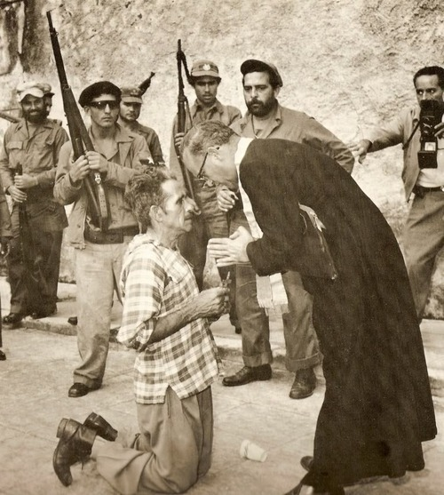

Andrew Lopez’e 1960 yılı Pulitzer Fotoğrafçılık Ödülü’nü getiren Son Dua isimli fotoğraf kanlı bir iç savaş hesaplaşması sırasında objektiflere takıldı. 1933 yılında Çavuşlar Ayaklanması olarak bilinen askeri operasyon ile Küba’yı tamamen ele geçirerek Amerika Birleşik Devletleri ülke yönetimine el koyduklarında seçtikleri başkan temsilcisi Fulgencio Batista idi. 1958 yılında Fidel Castro öncülüğündeki devrimciler birçok noktada hükümet askerlerini mağlup ederek, Fulgencio Batista hükümetine son verdiler. İşte o günlerde bölgede bulunan Andrew Lopez devrimci askerlerin arasına katılmıştı. Fidel Castro askerlerini kötü göstermek için elinden geleni yapan Amerikan basını, devrimci askerlerin vicdansızlığı anlatan bu fotoğrafa biraz da siyasal sebeplerden ötürü 1960’ta Pulitzer Fotoğrafçılık Ödülü’nü verdi. Fulgencio Batista destekçisi bir asker devrimci subaylar tarafından infaz edilmeden önce bir din adamı ile beraber son duasını ediyor..
